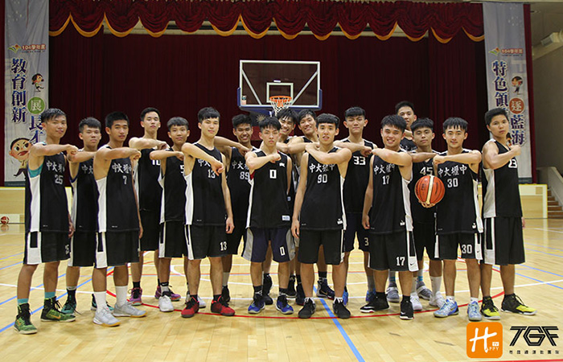

貼文時間：2017/07/14

位於桃園中壢區，附屬於國立中央大學，是桃園區乙級的勁旅，畢業許多活躍於大專組的選手，把握一個禮拜一天的練習時間，打出不俗的成績，他們是中大壢中…
談及球隊歷史及演變，帶隊第四年的葉宗奇教練表示：「壢中籃球隊成立幾十年，早期為校隊經濟性質，也一度中斷過，近年來再度辦理，但目前以社團性質優先，以不影響課業，再有限的時間內完成高效率的練習是訓練的目標。」
壢中各運動代表隊數多，每個校隊所分配的練習時間固定，雖然有限，但葉教練仍感謝校方提供的資源，較於多數社團性質球隊，校方採取支持正向的態度，鼓勵學生自主練習，招生方面，由於是純一般生的緣故，取材上葉教練說表示：「只要有心就跟著訓練。」讓學生從善其流，適性發展。
訓練部分，葉教練特別注重再投籃準度，教練表示：「練習時間的不足，沒有辦法安排太多體能項目，只能透過學生的自主練習去強化這塊，但是投籃準度就必須好好運用有場地的時間，加緊練練籃子，也會約鄰近學校做友誼賽，鍛鍊球員間的默契等等…」
在明年針對北區複賽的調整上，葉教練也說到：「加強身體對抗性，增加傳到流暢度以及單打的成功性為主，明年也會在習慣的區域聯防加入變形的效果，製作多一點的轉換快攻。」
帶隊四年以來，最有印象的是什麼呢？葉教練苦笑著說到：「大概是連續兩年在預賽被絕殺吧，第一年是內壢高中，接著是武陵高中。雖然被絕殺的感覺並不好，但同時也使我們直到最後關頭都不能鬆懈的道理，兩場的敗仗對我們卻有很大的收穫。」
對於合球選手出生的葉教練，這是第一次接任教練一職，在戰術及訓練方式上都費了了不少心力去研究，但教練坦言，對他來說，最大的收穫莫過於學生的笑容，以及與球隊一同奮戰，一路從預賽打進複賽的每一場球…
中大壢中近年成為北區複賽的常客，他們簡單而樸實，對於下個賽季的目標，似乎沒有設限，只求穩扎穩打，一場一場上去，就因為壢壢皆辛苦，壢中籃球隊更要展現壢己利人的氣魄。